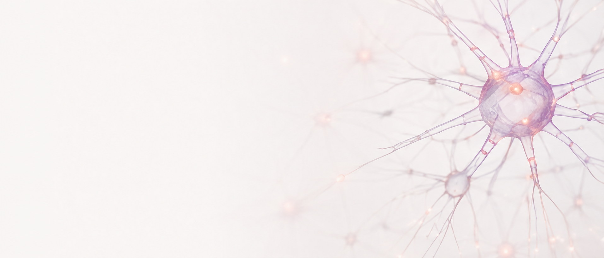

Состояние
Почему изменения начинаются не с действий, а с состояния
Когда мы меняем внутреннее состояние, внешние обстоятельства начинают меняться естественным образом. Как это работает на самом деле.
Читать статьюСтатьи и наблюдения о мышлении, состоянии, отношениях и реализации, а также научные материалы о психотехнологиях, эмоциональном интеллекте и устойчивых изменениях.
Когда мы меняем внутреннее состояние, внешние обстоятельства начинают меняться естественным образом. Как это работает на самом деле.
Читать статьюКак эмоциональный интеллект влияет на качество решений, отношения и результаты в бизнесе и жизни.
Читать статьюПочему быть собой — это не слабость, а основа настоящей близости и глубокой связи.
Читать статью
Простая медитативная практика, которая помогает вернуться к себе и услышать главное.
Читать статью
Методы и инструменты, основанные на нейропластичности и когнитивных подходах.
Читать статью
Научные данные об эмоциональном интеллекте и его влиянии на качество жизни и успех.
Читать статью
Исследования поведения человека и практики устойчивых изменений.
Читать статью